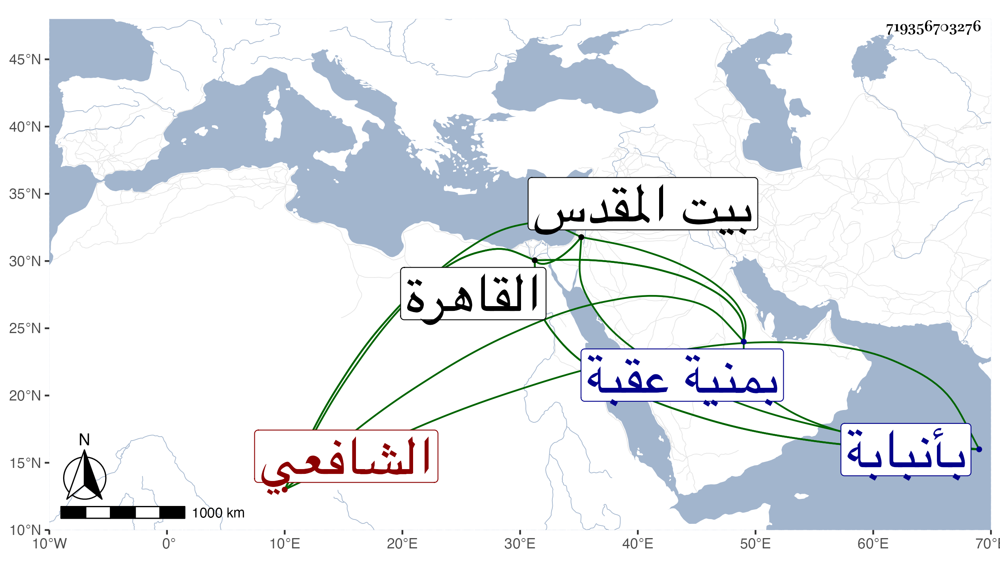

0902Sakhawi.DawLamic.ITO20230111-ara1.EIS1600.719356703276
Biography ID: 719356703276
573
أحمد بن محمد بن يوسف بن سلامة بن البهاء بن سعيد الشهاب أبو العباس ابن ناصر الدين وربما اختصر فقيل ناصر العقبي الشافعي نزيل النيابة وأخو الزين رضوان ووالد محمد الآتيين ويعرف بالعقبي . ولد تقريبا سنة ثمان وستين وسبعمائة بمنية عقبة وقرأ بها القرآن ثم انتقل إلى القاهرة وتلاه بها للسبع على غير واحد من الشيوخ واشتغل يسيرا وحضر دروس الشمس الغراقي والشطنوفي في الفقه والفرائض والنحو وكذا دروس البلقيني والأبناسي في آخرين ولازم الزين العراقي في أماليه وغيرها ، وكان يأتي إنبابة للاشتغال على يوسف بن إسماعيل الإنبابي فتلا عليه للسبع وبحث عليه الشاطبية ومقدمة له في الفرائض مع جميع الحاوي في الفقه ونصف المنهاج وسمع الحديث بالقاهرة على المذكورين والهيثمي والحلاوي والسويداوي والتنوخي وابن أبي المجد وابن الكشك ومريم ابنة الأذرعي وسارة ابنة السبكي في آخرين منهم الجمال عبد الله الحنبلي والشرف ابن الكويك وبمكة في سنة خمس وثمانمائة على ابن صديق والزين المراغي وأجاز له باستدعاء شيخنا وغيره جماعة كأبي حفص البالسي والبدر بن قوام وابن منيع وابنة ابن النجا وابنتي ابن عبد الهادي وأفردت له مشيخة مسماة القربى في مشيخة الشهاب العقبي حدث بها غير مرة بعد أن وقف عليها شيخي وقرضها وكذا حدث بغيرها من مسموعاته بل وأقرأ القراءت أيضا مع كونه كان تاركا للفن لكن لقصد سنه وإسناده ، وحج غير مرة وزار وهو صغير مع والده بيت المقدس وتنزل في صوفية الشيخونية ، ثم انقطع دهرا بجوار ضريح يوسف الأنبابي بها وكان خيرا متين الديانة ظاهر الوضاءة ضاحك السن ساكنا وقورا حسن الخشوع والذكر والابتهال والبكاء عند ذكر الله وسوله صلى الله عليه وسلم يديم التلاوة منقلا من الدنيا قانعا باليسير صحيح السمع والبصر قوي الهمة راغبا في الخير عظيم البركة صبورا على التحديث مكرما للطلبة قرأت عليه الكثير بأنبابة وغيرها وتحول بأخرة إلى ابنة له بالقرب من الأشرفية ونزل وهومتوعك لصلاة عصر الجمعة بها فسقط من سلم الميضأة فمات شهيدا وحمل إلى منزله ثم صلى عليه بمصلى باب النصر ودفن عند أخيه بتربة قجماس وذلك في يوم السبت رابع عشر ذي الحجة سنة إحدى وستين رحمه الله ونفعنا ببركته .
